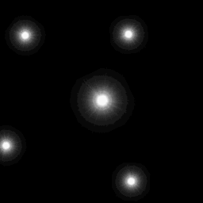

ef_flare;
Returns: N/A.
This constant is for use in the functions effect_create_above and effect_create_below,
and will create a flare effect as illustrated in the image below:

if mouse_check_button_pressed(mb_left)
{
effect_create_above(ef_flare, x + lengthdir_x(32, image_angle), y + lengthdir_y(32, image_angle), 0, c_white);
instance_create(x + lengthdir_x(32, image_angle), y + lengthdir_y(32, image_angle), obj_Bullet);
}
The above code will create a small, white, flare effect at the indicated position as well as an instance of "obj_Bullet" when the mouse button has been pressed.